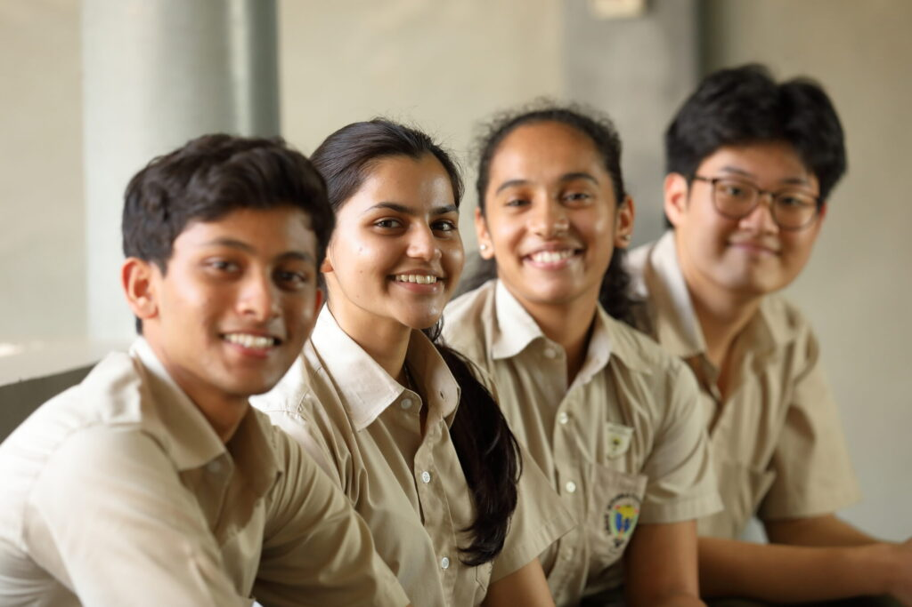
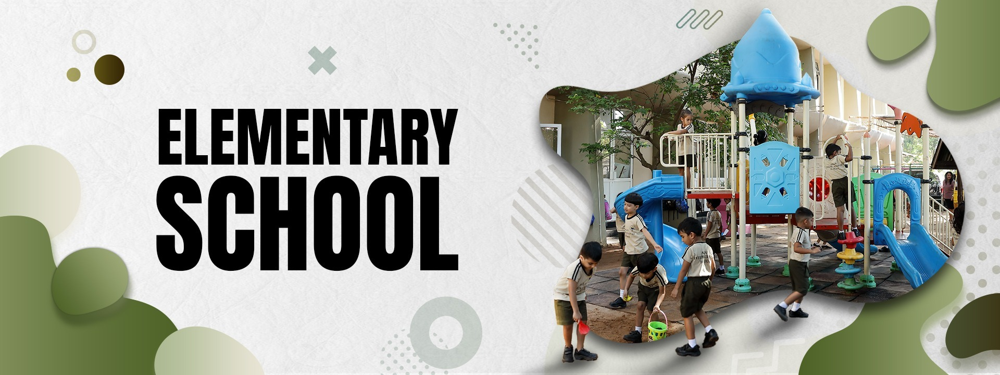
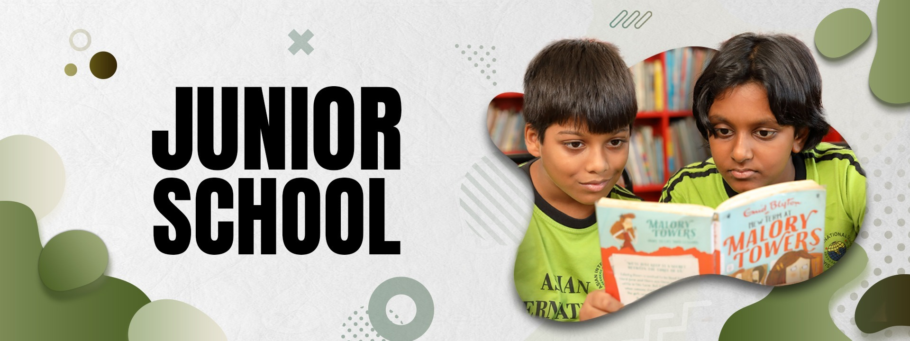
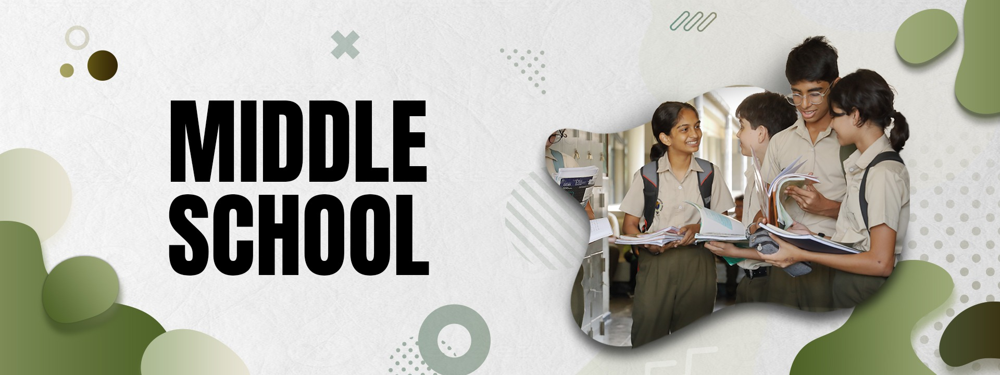
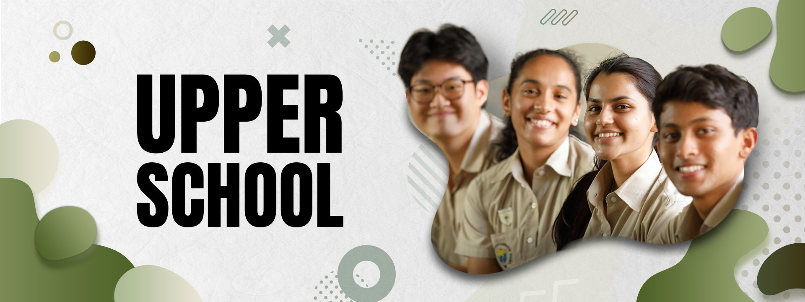
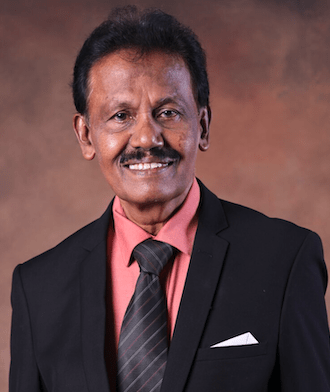

AIS is recognised as a Teaching Institution by Pearson, which allows the conducting of exams within the school as a centre, eliminating the need for any intermediary organisations.

Our students learn and grow within a nurturing pastoral environment imbued with the principles of respect, equality and fair play, where diversity is encouraged and celebrated. Each individual makes a unique and valued contribution to the rich fabric of school life, and our world qualified, trained and experienced teachers ensure that no one is left behind.
Sport is given an important place in the School's curriculum. The school encourages Swimming, Basketball, Netball, Tennis and Rowing. Music and Dance is taught as part of the curriculum up to Grade 8. Clubs and Societies encourage further specialization.
It is the aim of AIS to provide students with a sound moral basis, a well educated mind with a solid academic foundation, and very importantly, to develop a balanced well rounded person. Academic learning must go hand in hand with character development and to this end we train our pupils at AIS.
The educational journey is a transformative experience that shapes individuals' knowledge, skills, and personal growth. The school is divided into four distinct sections providing a structured, age-appropriate learning environment.

Our well-resourced and creatively laid out Elementary School provides a happy, safe and very homely environment where we gradually prepare your child for school life. Children between the ages of 2½ and 7 learn and develop both academically and socially in a stimulating learning environment.

The Junior School comprises students ages 7½ to 10½ in Years 3, 4, 5 and 6. Its objective is to enable the child to realise his or her potential as a unique individual and to develop cognitive, social and emotional skills to interact harmoniously.

A well-rounded education is provided to bring together academic, social and emotional learning, providing students with essential pillars to build a firm foundation for happiness, fulfillment and success in life.

The richly stimulating learning experience is designed to challenge as well as encourage young minds to think skillfully, manage responsibly, and balance intelligently all the opportunities given to them.
The leaders who guide each section of the school.

B.Com (Univ. of Madras)
M.Ed, P.G.Dip in Education, B.Sc (Chemistry)
B.A (Social Science), Higher Diploma in Int’l Relations
B.Ed, Dip. in Montessori (AMI)
M.B.A, PG Dip. in Marketing, CIM
Meet our founder, principal and leadership team.
Our Founder Meet the Principal